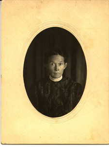
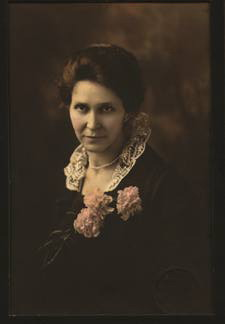
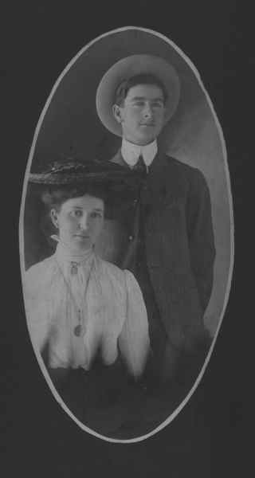
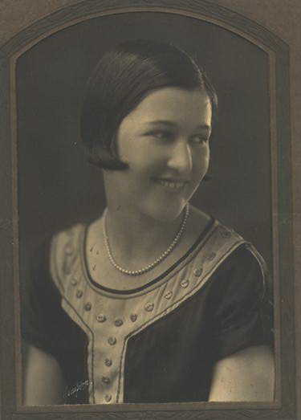

Mapping Maternal Ancestors
Some descriptive text here......
Scroll to Advance ▾Peggie Hargrave (?-?)
Peggie Hargrave was probably born in the 1790s in south-central Kentucky or north-central Tennessee. Little is known about Peggie's life or her parents, though we do know that in 1808 she married James Looney "Looney" Ratliff in Logan, Kentucky. Looney's mother was Cherokee; because Cherokee membership is matrilineal, Looney was also considered Cherokee. Peggie and Looney had two daugthers: Jane, born in 1814, and Lucy, born in 1827. Peggie's date and location of death is unknown.
Lucy Ratliff (1827-1871)
Lucy Ratliff was born in 1827 in Cherokee Nation East (modern Tennessee), only a few years prior to the Indian Removal Act of 1830. She married Lewis Walker Hildebrand in the late 1830s or early 1840s. Lucy was the second of Lewis's four wives. Her sister, Jennie, married Lewis's brother, Isaac Newton Hildebrand.
Lewis was the great grandson of Nanyehi, also known as Nancy Ward, a Beloved Woman of the Cherokee who was an important representative of the Cherokee in their early dealings with white colonists. Lewis was an assistant conductor of a wagon train on the Trail of Tears; his party left in late 1838 and arrived in "Indian Terriotory" in early March of the following year, having lost 28 members of the party. Lewis's first wife, Nancy Busyhead Walker Hildebrand, died along the trail in southern Missouri. We do not know whether Lucy accompanied Lewis along the Trail of Tears, or if she was a member of a different wagon party. We do know that she had arrived in Indian Territory by 1842, when her daughter Annie was born. Lucy was 15 when Annie was born.
While her date of death is unknown, Lucy died before 1871 in the Delaware District of Cherokee Nation West (Indian Territory) and is buried in Rolston Cemetery in Bernice, Oklahoma.
Annie Hildebrand (1842-1892)
Annie Hildebrand was born in 1842 in Cherokee Nation, Indian Territory. While her exact birth location is unknown, it is likely that she was born in what is now eastern Oklahoma. She had one daughter, Joanna, with John Ross Linder. Joanna was born in Cherokee Nation West's Delaware District. Annie died in the same region in 1892 and is buried in Rolston Cemetery in Bernice, Oklahoma.
Joanna Ruth Linder (1861-1910)
 Joanna Linder was born in the Delaware District of Cherokee Nation West in 1861. At the age of 15 she married Felix Grundy Nidiffer (in 1876), and they had 11 children, 10 of which survived to adulthood. After Felix's death in 1896, she remarried and had two additional children. Joanna died in 1919 in Bernice, Oklahoma.
Annie Lula Nidiffer (1881-1962)

Annie Nidiffer was born in 1881 in the Delaware District of Cherokee Nation West. Annie was the second child of Joanna Linder and Felix Nidiffer, and was born when her mother was 19.
Annie's great-great-grandfather, George Ward, was assassinated 18 years prior to her birth by the "Pin Indians," a Cherokee secret society devoted to maintaining traditional Cherokee ways of life.
In the early 1890s, Native Americans living in Indian Territory were forced to cede all communally held tribal land, which was then divided and allotted to individuals who could prove "blood" descent. Any "surplus" land was then reallocated to Euro-American settlers moving west. As a member of the Cherokee tribe, Annie was eventually allocated a plot of land.
At the age of 18, Annie was postmistress at her father's small store on Horse Creek near Grand River. Today, this store is under the Grand Lake o' the Cherokees--a reservoir created for hydroelectric power in the late 1930s and early 1940s.
Annie married Hiram Judson "Jud" Allison in 1903 at the age of 22. They settled in Afton, a small town in what was to become northeastern Oklahoma. Annie and Jud had three children, though only two survived past birth: Marguerite and Hiram Judson Jr.
Between the births of her daughter Marguerite (1905) and her son Hiram (1915), the state of Oklahoma was admitted to the United States in 1907.
Annie died in 1962. She is buried in the Mount Hope Cemetery in Afton, Oklahoma.
Marguerite Drennan Allison (1905-1994)
Marguerite Allison was born in 1905 in Afton, Oklahoma. She graduated from the Oklahoma College for Women (now known as the University of Science & Arts of Oklahoma) in 1927. She then taught physical education and speech to girls at the School for the Blind in Muskogee, Oklahoma for 3 years.

At the age of 25, Marguerite married Fred Patterson Jimerson, a fellow teacher, in Muskogee, Oklahoma, and the newly married couple settled in Marguerite's hometown of Afton in 1930. After one year of teaching Spanish in Afton, Marguerite retired from teaching for 15 years. Her first daughter, Patricia "Pat" was born in 1931, followed by Martha Jean "Jean" in 1933.
During WWII, Marguerite worked for her father at Allison Grain & Lumber Co. After her brother's return from the Army, Margeurite and Fred moved with their family to nearby Miami, Oklahoma, where she returned to teaching at Miami High School. Fred also continued to work in education, serving as Superintendent of Schools for Ottawa County (which includes both Afton and Miami) for over 35 years. In addition to their work in schools, Marguerite and Fred were cattle ranchers, starting with Marguerite's Cherokee allotment and slowly expanding their land holdings. (Margeurite is listed on both the Dawes Roll and the Guion Miller Roll, unlike her younger brother, who was born too late to be listed on the rolls or allotted land.
Margeurite retired from teaching in 1967, but maintained active membership in the Ottawa County chapter of the Oklahoma Retired Teachers Association, serving ast the president from 1969-70 and membership chair from 1977-78. She died in 1994 in Miami, Okalhoma, and is buried with her husband at the Mt. Hope Cemetery in Afton.
Patricia Ann Jimerson (1931-present)
Patricia "Pat" Ann Jimerson was born in Afton, Oklahoma in 1931. She married Donald Ryan Bell in 1953 at the age of 21. Their first daughter, Margaret Lynne "Lynne" was born in Enid Oklahoma